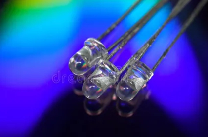
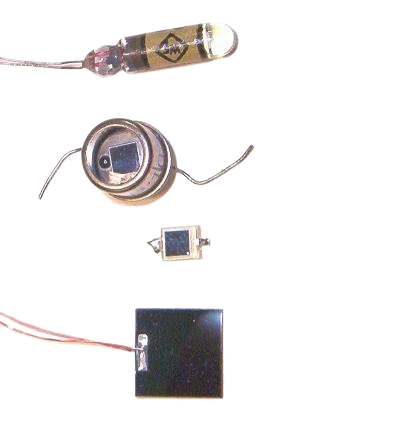

TEST
i present you the different type of diode
we can't realy say the date of the first diode because there was a lot of different diode for a lot of usage the one that are consider like a pionner is the Fleming valve
light emiting diode

one of the most common like most of the diode it consist of a semi-conductor but this type have special element in it to make the release photon when electron pass trought them
laser diode

this type of diode has generaly a realy high consumption compare to the light emiting diode due to the fact that this type of diode is use to cut metal an also for medical industrie
Photodiode or photoelectric diode

this type of diode emit little voltage when exited with light